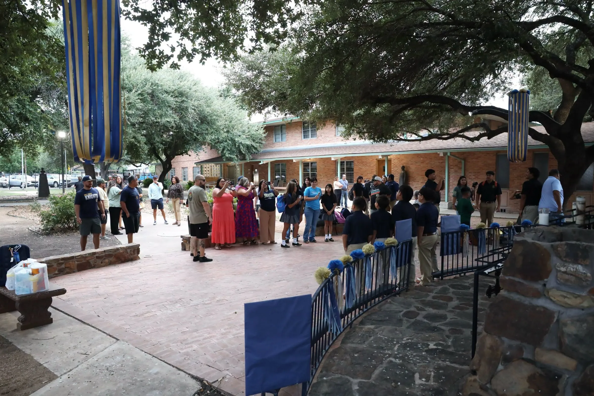

HOLY CROSSof San AntonioEnglish
HOLY CROSSof San AntonioEnglishInicio › Contacto
Contacto · ContactLe contesta una persona de la escuela, en español o en inglés.
Call a person. We pick up, in English or Spanish.El número y la dirección de la oficina principal son los que aparecen en el sitio web actual de la escuela. CONFIRMAR nombres y línea de Admisiones
Estacionamiento y dónde dejar a los estudiantes [NOTA DE LA ESCUELA]
Monday to Friday [HOURS]
Es el formulario de la escuela, el mismo de la página de Admisiones.
Rather not call? Use the form.
También en inglés: esta página
Llame (210) 433-9395